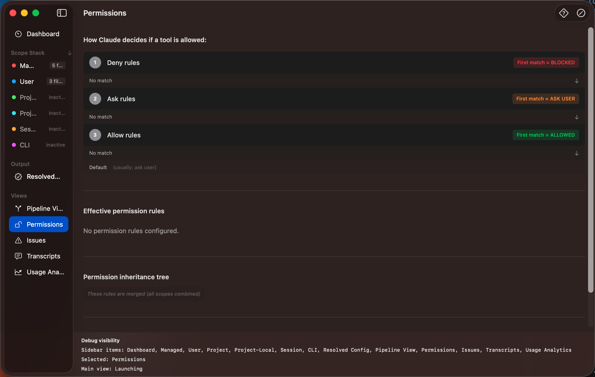

The Permissions Inspector shows how Claude Code decides whether to allow, deny, or prompt for each tool invocation. Open it from the Views section in the sidebar or press ⌘3.

A visual diagram showing the precedence of rule types. Rules are evaluated in a specific order — explicit denials take priority over allows, and higher scopes override lower ones.
A complete table of all merged permission rules with source tracking. Each rule shows:
bash, mcp:*)Shows how rules cascade through scopes. You can see where a particular tool's permission is first defined and whether higher scopes override it.
Lists rules that override each other across scopes — for example, when a project allows a tool but the Managed scope denies it.
Toggle Edit Mode (pencil icon in the toolbar) to add or remove permission rules. You can select the rule type (allow, deny, prompt) and the scope where it should be defined.
The What-If Inspector lets you test permission decisions without actually running Claude Code.
Enter a tool invocation (like bash("ls -la") or mcp:filesystem.read)
and the inspector immediately shows whether it would be allowed, denied, or prompted — and which
rule made that decision.